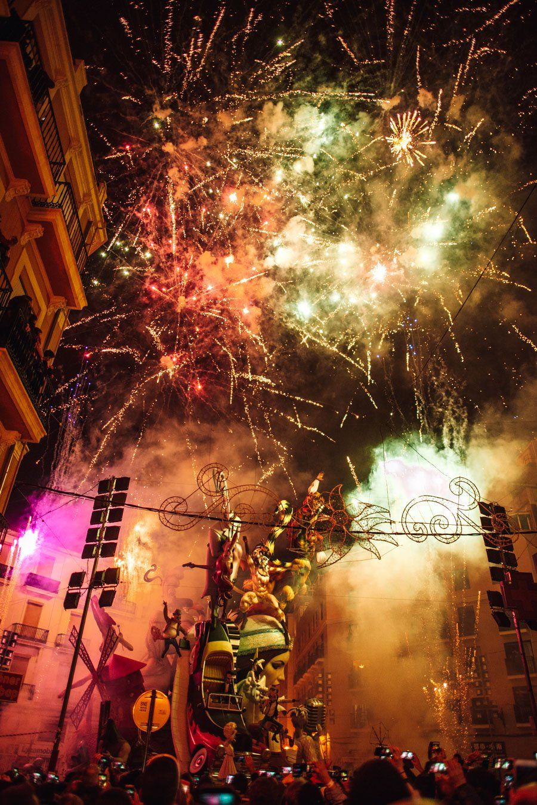

🔥 Сан-Хуан на горизонте — что это и почему его ждут весь год
🔥 САН-ХУАН НА ГОРИЗОНТЕ — ЧТО ЭТО И ПОЧЕМУ ЕГО ЖДУТ ВЕСЬ ГОД
Через 9 дней — ночь, ради которой побережье живёт целый год.
Что это. Ночь Сан-Хуана (Noche de San Juan) — 23 июня. Самая короткая ночь года, языческий праздник солнцестояния, в который потом вшили имя Иоанна Крестителя. Празднуют по всему испанскому побережью, но на Costa Blanca это два разных события одновременно.
1. Hogueras de San Juan в Аликанте — городской фестиваль.
Аликанте на неделю превращается в музей огромных сатирических кукол-монументов. В районах строят hogueras, по центру — mascletà (дневные оркестры пиротехники), парады, концерты. В ночь на 24 июня — Cremà: одновременное сожжение всех фигур по всему городу. Тушат пожарные шланги, кругом дым и народ. На пляже Постигет — финальный фейерверк «пальмера», когда небо превращается в огненную крону.
2. Ночь Сан-Хуана на пляжах — народное.
Это празднуют все прибрежные города, не только Аликанте. Костры на песке, прыжки через огонь на удачу (нужно перепрыгнуть 7 раз), записки с желаниями в огонь, купание в полночь — на счастье в новом году.
Как готовиться.
• Hogueras в Аликанте — заранее место в отеле или у знакомых, в город всё забито
• На пляже у себя — взять плед, термос, спички или зажигалку
• Костры разрешены не везде — муниципалитеты публикуют правила за неделю, проверь свой
• Прыгать через огонь — после полуночи, на маленьком костре, не пьяным
Я в этом году иду на пляж у себя — мне ближе народное, без толп.
Подробный гид по конкретным пляжам и расписанию Hogueras — на следующей неделе.
#СанХуан #Hogueras
10:00👁 ~?